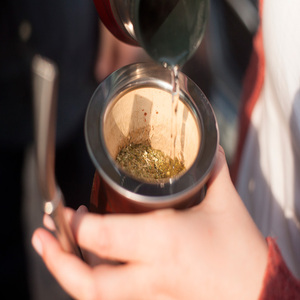

En éste apartado les explicaremos paso a paso, en detalle todos los tratamientos necesarios para una correcta
utilización del mate!
Como curar un buen mate?
Colocar yerba húmeda dentro de la calabaza durante 24 horas con agua caliente.
Luego retirar la yerba y rasparla calabaza con una cuchara para retirar el hollejo.
El uso frecuente ayuda al proceso. NO lavar con agua y secar con una servilleta después de cada uso.

Como cebar un excelente mate?
Llenar el mate en sus tres cuartas partes. Tapar con la mano y agitalo con la boca hacia abajo,
logrando que los componentes de la molienda se mezclen equilibradamente y la yerba quede inclinada sobre
el mate a 45° aproximadamente.
Humedecer la yerba con agua tibia en esa pequeña cavidad que se formó sobre uno de los costados
del mate. Espera a que la yerba absorba el agua y coloca la bombilla dentro del mate.
Calienta el agua evitando que hierva: para cebar un buen mate es muy importante que nunca
supere la temperatura de 80°C.
Agregar el agua caliente del lado de la bombilla hasta que se llene 3/4 partes.
Disfruta el ritual de compartir con el otro, la magia de tomar mate.
Como se cuida a nuestro mate
Evitar que quede líquido dentro de la calabaza, para prevenir la formación de hongos, para ésto es necesario
dejar 2 paños de servilleta dentro para que absorva la humedad
No dejar el mate con yerba usada más de 24 hs
Únicamente lavarlo con un poco de agua, sólo la parte de la calabaza, para sacarle los restos de yerba.
Evitando así que la yerba que queda sobre el mate no se descomponga.
No dejarlo secar boca abajo, menos cuando tiene un poco de líquido dentro, ya que éste
caerá sobre la virola.
Evitar mojar el cuero que recubre la calabaza y dejarlo al sol directo. Éstos dos provocan que se reseque y
se agriete el cuero.
Evitar golpes, para que la virola no se afloje y para que no se quiebre la calabaza.